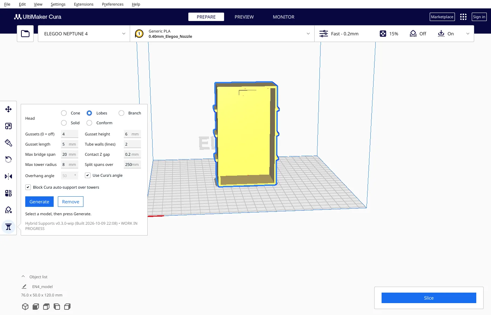
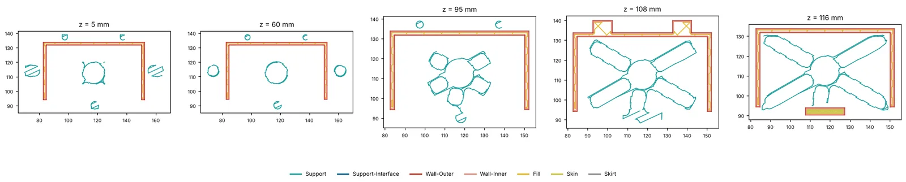
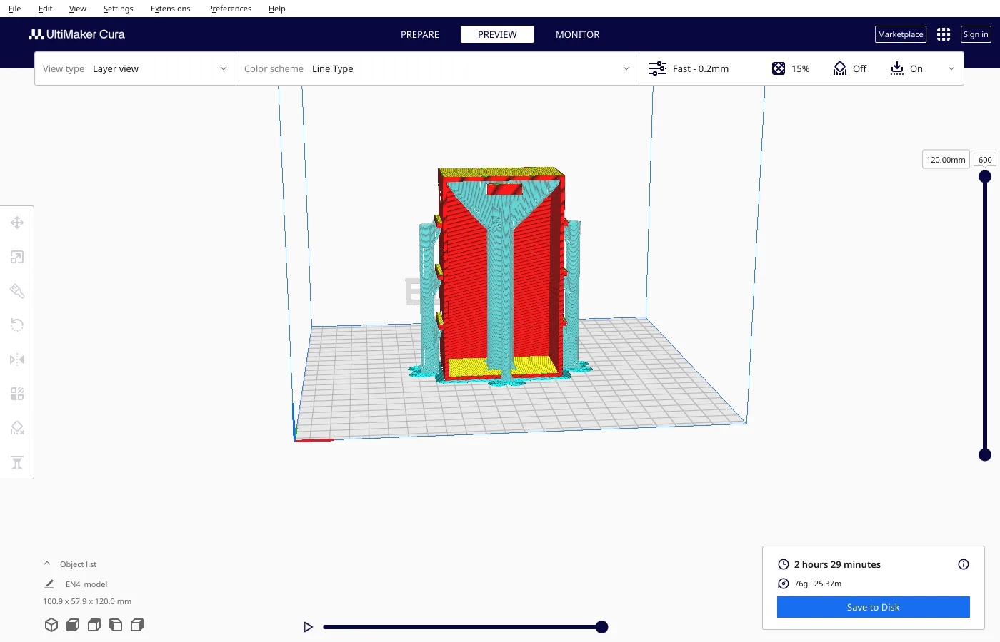
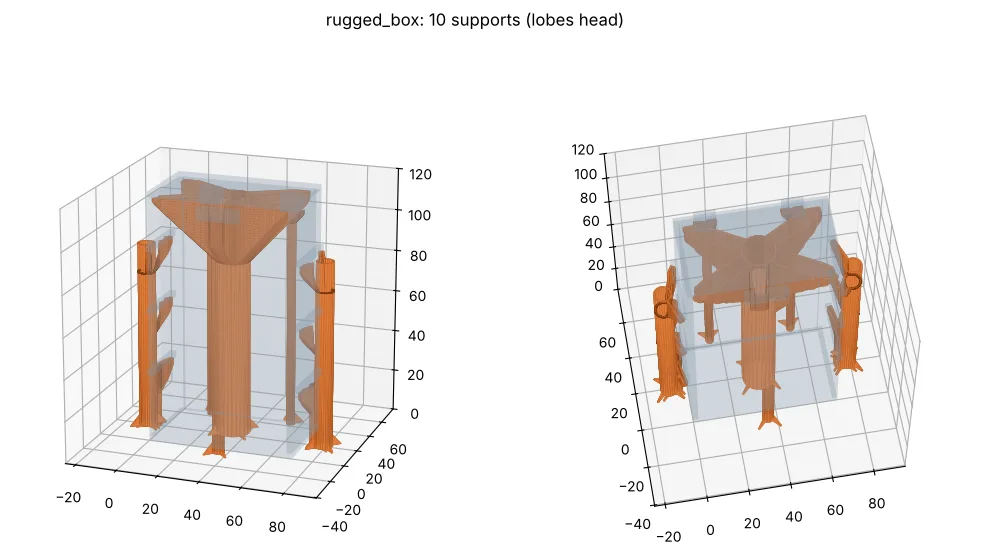
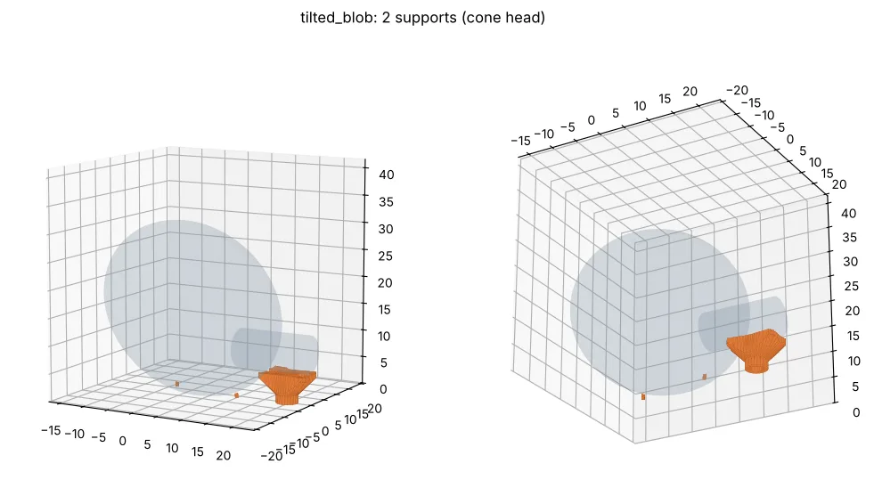
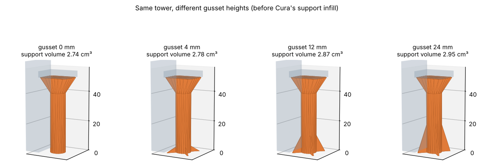
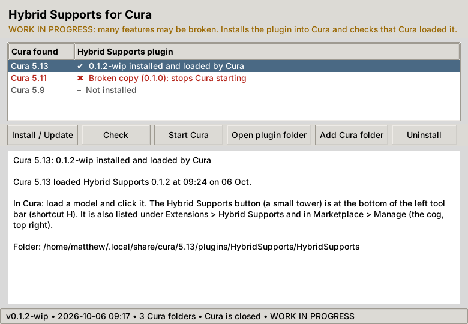

Hybrid Supports for Cura
One hollow pillar per overhang, with gussets at the foot and a hollow star of lobes on top that flares out to the corners. Every layer is one closed loop, and the gaps between lobes are short enough to bridge. Less time and plastic under tall overhangs.

What it does
One pillar per overhang
A hollow tube placed where it has a clear column down to the plate or the model. Wide gaps get one pillar, not three.
Hollow lobes head
A star-shaped pseudo-cone: thick hollow lobes flare out at 45° to the corners. One closed loop per layer, even with 0 support walls.
Only as many lobes as needed
More lobes are added only where a bridge would be longer than your Max bridge span. Edges that rest on a wall count as supported. A cone with spokes inside is still an option.
Gussets that stay clear
Set count, height and length. Fins that would hit the model are shortened automatically.
No double support
A support blocker over each overhang stops Cura's auto-support from filling the same area.
Plain Cura plugin
Supports are normal support meshes. No custom CuraEngine; works on Cura 5.x, including profiles with a minimum support area.
What Cura makes of it

The test box, slicer estimates
Hybrid Supports, Lobes head: 149 min, 4.9 m of support filament. Cone head: 151 min, 5.4 m. Cura tree support: 151 min, 6.5 m. Cura normal support: 190 min, 22.3 m. So about 78 % less support filament than normal support and about 25 % less than tree support, at about the same time as tree. Nothing has been printed yet.



Gusset height is a cost lever

Real prints


Install
Click and launch
- Download the source (Code › Download ZIP) and unzip it. Close Cura.
- Double-click
Install-Linux.sh,Install-Windows.batorInstall-Mac.command(the Windows and Mac ones are not yet tested). - Press Install, then Start Cura. The window shows a green tick once Cura has loaded the plugin.
Cura package
- Download
HybridSupports-…curapackagefrom Releases. - Drag it onto the Cura window and accept.
- Restart Cura.

H.What doesn't exist yet
- A test print on a real printer; testing on Windows, macOS or Cura 5.14
- Paint-on supports. Cura 5.14 adds these natively, so this plugin won't.
- A real print of the experimental Tethers head (strips strung between walls under the overhang, then a cap; straight bridges from wall to wall that lean 45° so they snap off; 134 min instead of 149 on the test box in Cura's estimate)
- Background generation (it blocks the UI for a few seconds on complex parts)
- Where the model blocks the cone, part of an overhang is only partly reached; the status line says how many